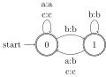
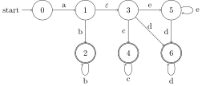
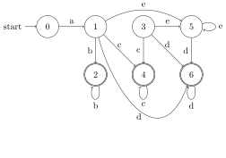
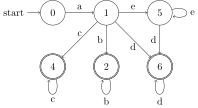
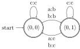
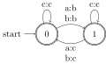
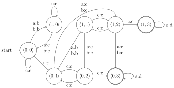

From automata to transducers
An automaton can be regarded as either a generator or a recognizer. The generator perspective asks what strings can be generated by following paths from initial states to final state. The recognizer perspective instead takes a string and asks whether it describes a path from an initial state to a final state. The two perspective seem different intuitively, but they are mathematically equivalent. A string language \(L\) is generated by an automaton iff it is recognized by said automaton. The same is true for the \(n\)-gram grammars we encountered earlier on: they can be regarded as generators of well-formed strings, or as recognizers that determine whether a given string is well-formed.
But not all problems in natural language are concerned with well-formedness in this narrow sense. For example, we might want to translate an underlying morphological representation like car+PL to the surface form cars. This is not a matter of well-formedness. Our primary concern is not whether the underlying form is licit, but just what its corresponding surface form should be. It’s not about string languages, but string relations. For these cases, an automaton is not the right tool. Instead, we need transducers.
Transducer = automaton with output
A finite-state transducer (FST) looks exactly like an FSA except that arcs are now labeled with pairs of symbols. The first one still determines how the transducer switches between states as it moves through the string. The second symbol, on the other hand, is emitted by the transducer. This allows the transducer to gradually produce an output string as it moves through the input string.
The transducer below keeps all \(a\)s as \(b\)s while keeping \(b\) and \(c\) the same.
It gradually transforms \(acbbaa\) one symbol after the other:
- \(\mathbf{b}cbbaa\)
- \(b\mathbf{c}bbaa\)
- \(bc\mathbf{b}baa\)
- \(bcb\mathbf{b}aa\)
- \(bcbb\mathbf{b}a\)
- \(bcbba\mathbf{b}\)
Gradually rewrite \(aaaaba\) in the fashion above.
This transducer rewrites \(a\) as \(b\) if it immediately follows \(b\) in the input.

In a transducer, both the input and the output component of an arc label may be the empty string.
The transducer below can follow the \(\varepsilon\)-arc to start rewriting \(a\) as \(b\).
For example, \(aaaa\) can be rewritten as \(aabb\), but not \(abba\).
The transducer above produces multiple outputs for the input string \(aaaa\). List all of them.
In fact, the arcs of an FSA may also be labeled by the empty string. But in an FSA \(\varepsilon\)-labeled edges can always be replaced by arcs that are labeled by some symbol of the alphabet. With FSTs, this is not the case: some transductions can only be defined by FSTs with \(\varepsilon\) in the labels.
Suppose an FSA contains an \(\varepsilon\)-arc from state \(q_1\) to state \(q_2\). Assume furthermore that \(q_2\) only has an \(a\)-arc to \(q_3\). Then one can also add an \(a\)-arc between \(q_1\) and \(q_3\). One every outgoing arc from \(q_2\) has a counterpart leaving \(q_1\), the \(\varepsilon\)-arc between \(q_1\) and \(q_2\) becomes redundant and can be removed.
This is exemplified below. The first automaton contains two \(\varepsilon\)-arcs.

We first remove the second \(\varepsilon\)-arc. Since we can go from \(3\) to \(6\) with an \(\varepsilon\)-arc from \(3\) to \(5\) and a \(d\)-arc from \(5\) to \(6\), we add a \(d\)-arc from \(3\) to \(6\). We can also go from \(3\) to \(5\) with an \(\varepsilon\)-arc and then loop there with an \(e\)-arc, so we add an \(e\)-arc from \(3\) to \(5\). This takes care of all outgoing arcs that can be taken via the \(\varepsilon\)-arc from \(3\), so we remove the latter.

We now proceed in the same way for the first \(\varepsilon\)-arc, connecting \(1\) directly to any state that can be reached by first taking the \(\varepsilon\)-arc from \(1\) to \(3\).

At this point, state \(3\) becomes redundant because it cannot be reached. So we remove it, giving us the final, \(\varepsilon\)-free FSA.

The following FST uses an empty input label to randomly insert arbitrarily many \(b\)s in a string of \(a\)s.
Without \(\varepsilon\) as the input label, the number of \(b\)s that could be inserted would be bound by the size of the input string. Explain why!
The FST below uses an empty output label to delete all \(a\)s in the input.
Deletion is impossible without \(\varepsilon\) as the output label.
Design an FST that
- takes as its input members of \(\left \{ a,b \right \}^*\), and
- can insert an unbounded number of \(a\)s after each \(b\) in the input, and
- deletes the first \(b\) that occurs immediately after \(a\) in the input.
As you can see, FSTs look very similar to FSAs, but that does not mean that every result that holds for FSAs also holds for FSTs. Unfortunately, this result extends to two important properties of FSAs: determinizability, and closure under intersection. But let’s first focus on a few highly useful properties of FSTs.
Composition closure
Finite-state transductions are closed under composition. So if \(f\) and \(g\) are finite-state transductions, then so is \(f \circ g \mathrel{\mathop:}=\left \{ \left \langle a,c \right \rangle \mid \left \langle a,b \right \rangle \in f, \left \langle b,c \right \rangle \in g \right \}\). One can easily construct a transducer for the composition of two FSTs by modifying the basic idea behind the intersection construction for FSAs.
Consider the two FSTs below. The first one rewrites each \(a\) as \(b\), whereas the second one rewrites ever other \(b\) as \(c\).

Suppose our input string is \(bacab\). Then the first transducer rewrites it to \(bbcbb\), which is then rewritten as \(bccbc\) by the second one. This is also the result obtained by the transducer below.

What is the output of \(bacab\) if one applies the second transducer before the first?
Here’s the relevant steps for the construction. As with the intersection construction for FSA, each state is a pair that encodes which state the first and second transducer are in, respectively. The major change is how states are connected by arcs, and how these arcs are labeled.
Suppose the current state is \(\left \langle 0,1 \right \rangle\) and we want to add an arc for the input symbol \(a\). Then we first check what happens in the first transducer when it is in state \(0\) and sees an \(a\). In the example above, we rewrite \(a\) as a \(b\) and move to state \(0\). Next we check what happens in the second transducer. Since we’re looking at the complex state \(\left \langle 0,1 \right \rangle\), we have to look at state \(1\) in the second transducer. But now comes the crucial change: since the first transducer has rewritten \(a\) as \(b\), the second transducer is fed \(b\) as input rather than \(a\). So we aren’t interested in the \(a\)-arc of the second transducer, but the \(b\)-arc. This arc takes us back to state \(0\) while emitting an \(a\) as output. Now we have everything we need to add the correct arc to the composition transducer: the arc takes us from \(\left \langle 0,1 \right \rangle\) to \(\left \langle 0,0 \right \rangle\), and it is labeled \(a:a\) as the input in the first transducer is \(a\) and the output in the second transducer is also \(a\). So the basic idea is: look at the output symbol of first transducer, and use that as the input symbol for the second transducer.
One more important difference: whereas a state in the intersection automaton is final iff both components are final, a state of the composition transducer is final iff its second component is final.
Consider the composition automaton from the previous example, now with simplified state names.

Suppose we compose this transducer with an FST that optionally rewrites the first \(a\) it encounters as \(b\) and adds an arbitrary number of \(d\)s at the end of the output. It also rejects all inputs that do not end in \(cc\). For such inputs, no output is produced.
The composition construction yields the following transducer:

- What output \(o\) does the first transducer produce for \(ccaaabc\)?
- Does the second transducer accept \(o\) as an input? If so, what output does it produce?
- Verify that the composition transducer computes the same output for \(ccaaabca\).
- Construct a transducer \(\tau\) that takes members of \(\left \{ a,b \right \}^*\) and replaces every other \(a\) by \(b\).
- Construct a transducer \(\rho\) that takes members of \(\left \{ a,b \right \}^*\) and replaces every other \(b\) by \(a\).
- Construct a transducer that computes \(\tau \circ \rho\).
- Construct a transducer that computes \(\rho \circ \tau\).
- Construct a transducer that takes members of \(\left \{ a,b \right \}^n\), \(n \geq 2\), as input and non-deterministically rewrites the first two symbols by members of \(a^+\).
- Construct a transducer that takes members of \(\left \{ a,b \right \}^*\) as input and rewrites the last symbol as \(b\), if it exists.
- Construct the corresponding composition transducer.
Composition is a very important property of FSTs. It allows you to define very complex rewriting procedures as a cascade of simple FSTs. At the very end, you can automatically compose the whole cascade into a single FST. Running just one FST is much faster. A cascade of \(n\) FSTs has to process the input string \(n\) times, a single FST only processes it once. The downside is that the composition FST can be very big and thus consumes a lot of memory. This is the same time-space trade-off we encountered with the intersection of FSAs.
Regularity of output
The output language of an FST is always regular. This is fairly easy to see: just drop the input components of each arc label, and the FST becomes an FSA. Since a language is regular iff it is generated by an FSA, this shows that an FST produces a regular output language.
But this argument only works if the FST is not restricted by what inputs we feed into it.
Let \(\tau\) be the FST that maps every string to itself. Dropping the input components shows that the FST generates \(\Sigma^*\). But now suppose that we only take input strings from \(a^n b^n\). Since \(\tau\) maps every string to itself, the output language is \(a^n b^b \neq \Sigma^*\). We already know from the Myhill-Nerode theorem that \(a^n b^n\) is not regular.
So the choice of input language can directly affect the complexity of the output language. Not too surprising. But FSTs are nonetheless well-behaved in a specific way: if the input language is regular, then so is the output language. That is to say, if the set of inputs is a regular language, then so is the set of outputs.
The argument for this is a bit more involved. It’s included here for future reference, but don’t worry if you can’t quite make heads or tails of it. The important point is that FSTs preserve regularity.
- Dropping the input component from an FST eliminates all input restrictions. Thus it is the same as assuming that the input language for the FST is \(\Sigma^*\).
- Given a regular language \(L\), the set \(\left \{ \left \langle s,s \right \rangle \mid s \in L \right \}\) is a finite-state transduction \(\mathrm{id}_L\).
- For every regular language \(L\), it holds that \(L = \mathrm{id}_L(\Sigma^*)\) (where \(\mathrm{id}_L(\Sigma^*)\) is the output language of \(\mathrm{id}_L\) over input language \(\Sigma^*\)).
- Consequently, it holds for every FST \(\tau\) that \(\tau(L) = \mathrm{id}_L \circ \tau(\Sigma*)\). So \(\tau(L)\) is identical to the FSA that is obtained by dropping the input labels from \(\mathrm{id}_L \circ \tau\). Therefore \(\tau(L)\) is regular.
Describe how one can construct an FST for \(\left \{ \left \langle s,s \right \rangle \mid s \in L \right \}\) as long as \(L\) is regular.
Closure under inverse
FSTs enjoy one more property that is tremendously useful: the inverse of an FST is also an FST. So if we know that the mapping from inputs to outputs is a finite-state transduction, the corresponding mapping from outputs to inputs is to. All we have to do for this is switch the input and output components of the arc labels.
Inversion makes it possible to use one and the same FST for generation and analysis.
- Connection between FSTs and SPE
- Implications for phonology